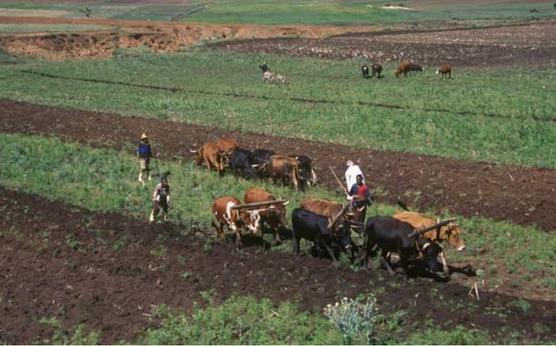
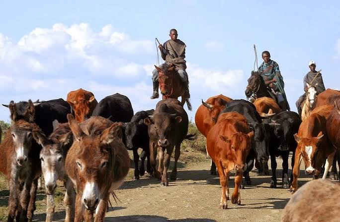

History of the Semonkong Community Semonkong is a small mountain town in the Maseru District of Lesotho, surrounded by dramatic highlands, deep valleys, and beautiful waterfalls. Its name means “Place of Smoke” in Sesotho, referring to the mist and spray rising from the famous Maletsunyane Falls. The community is part of the Basotho nation, whose history is closely linked to King Moshoeshoe I, who united different groups of people in the early nineteenth century and established the foundations of modern Lesotho. Basotho communities developed strong traditions of cooperation, livestock farming, storytelling, and respect for their land and ancestors. For generations, life in Semonkong has been shaped by the mountainous landscape and the changing seasons.


Many local families have relied on livestock farming, particularly sheep, goats, cattle, and horses, as well as small-scale agriculture and traditional crafts. Horses and Basotho ponies remain important for travelling through remote areas where roads are difficult to navigate. Community life is also influenced by traditional music, dance, initiation customs, oral histories, and the Sesotho language. In recent years, tourism has become increasingly important, with visitors attracted by the spectacular scenery, pony trekking, hiking, and opportunities to experience rural Basotho life.
| Season | Months | Highlights |
|---|---|---|
| Summer | December–February | Waterfalls, hiking, pony trekking and green mountain scenery |
| Automn | March–May | Scenic walks, photography and outdoor exploration |
| Winter | June–August | Possible snow, frosty scenery and traditional horse racing |
| Spring | September–November | Warmer weather, outdoor adventures and the Maletsunyane Braai Festival |